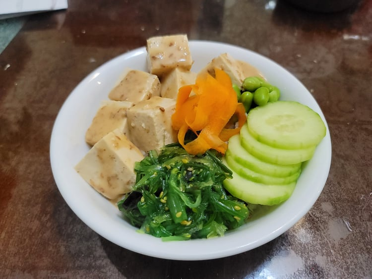

Sesame Ginger Tofu Poke Bowl

Ingredients:
Sesame Ginger Tofu Bowl:
- 1 lb Extra firm tofu, cubed
- Homemade sesame ginger sauce OR store-bought Sesame ginger dressing
- Cooked rice
Sesame Ginger Sauce:
- 1/4 cup Soy sauce or Tamari
- 1-2 cloves Garlic, grated
- 1 tbsp Lime juice
- 1-2 tsp Ginger, grated
- 1 tsp Sesame seeds, toasted
- 1 tsp Toasted sesame oil
Optional Toppings:
- Furikake
- Purple cabbage, shredded
- Avocado, cubed or sliced
- Scallion greens, chopped
- Cilantro, chopped
- Edamame
- Seaweed salad
- Cucumber, thinly sliced
- Carrot, thinly sliced
Instructions:
- Before cubing the tofu, wrap the tofu in paper towels and place on a cutting board. Then place a weight on top of the tofu to let it slowly squeeze out excess liquid, at least for 20 minutes.
- If making homemade sauce, combine all the sauce ingredients into a bowl and whisk until homogenous.
- Cube the tofu and then place into a bowl with the sauce. Toss until evenly coated and then let marinate for at least 10 minutes, tossing occasionally.
- Start the bowl with a layer of rice and then top with the tofu and desired toppings. Drizzle with any remaining sauce if desired.